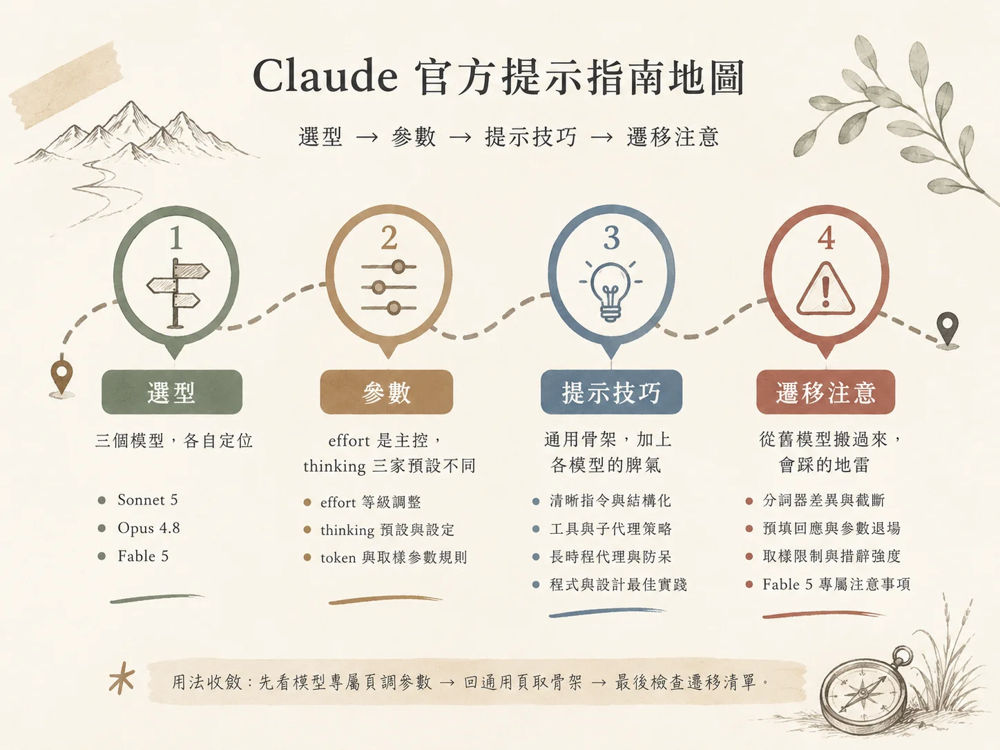

Anthropic 在官方文件裡放了四份提示工程指南：三份講單一模型（Sonnet 5、Opus 4.8、Fable 5），一份講所有模型共用的通用技術。四份各自成篇，實務上要用得反覆跳頁。這篇把它們收攏成一張工作地圖，照拿到新任務時的決策順序排：先選模型，再調參數，然後套提示技巧，最後檢查從舊模型搬過來會踩什麼。

整理原則
內容全部取自四份文件的實際敘述，文件未提及的部分直接標註為「文件裡沒有」。文件明確規定的優先順序已完整納入地圖：模型專屬指南優先，其次是通用技術，最後是遷移考量。若兩者講法衝突，以模型專屬指南為準。原文的英文提示片段，這裡全數譯成中文；參數名稱與程式碼維持原樣。
# 第一層：選型——三個模型各自站在哪
選型只回答一個問題：這個任務要多長的自主時程？文件給三個模型的定位剛好排成一條線，從單次任務到跨週的自主執行。
| 模型 | 文件所述強項 | 適用場景 |
|---|---|---|
| Sonnet 5 | 程式編寫與代理式任務 | 既有 Sonnet 4.6 提示開箱即用；工具鏈、結構化擷取 |
| Opus 4.8 | 長時程代理工作、知識工作、視覺、記憶任務 | 需要維持長時程連貫性的互動式程式編寫 |
| Fable 5 | 端對端、需人類數小時到數週的工作（與 Mythos 5 同一底層模型） | 最困難的未解問題；多日目標導向自主執行 |
Fable 5 的設計範圍有明確限制，文件指出其不適用於攻擊性網路安全、生物學及生命科學相關工作。此類請求可能直接回傳 stop_reason: "refusal"。要跑這兩類任務，從一開始就換別的模型。
# 第二層：參數——effort 是主控，thinking 三家預設不同
三個模型共用同一組 effort 等級：max ＞ xhigh ＞ high ＞ medium ＞ low。等級一樣，各家的起跳點卻差很多：
- Sonnet 5：預設
high（與 4.6 相同）；最難的程式與代理任務提高到xhigh。 - Opus 4.8：程式與代理任務從
xhigh起跳；對智慧敏感的任務至少high。max可能因 token 增加而報酬遞減，而且容易過度思考。 - Fable 5：大多數任務用預設
high，最敏感的用xhigh，例行工作降到medium或low。文件明說它的低 effort 通常已超越先前模型的 xhigh 表現。
跨模型對照只有 Sonnet 5 的文件給了：Sonnet 5 的 medium 約等於 4.6 的 high，Sonnet 5 的 high 約等於 4.6 的 max。對照時看觀察到的思考長度，效果比對名稱可靠。
三個模型在 low 和 medium 有一個共同行為：嚴格把工作限定在被要求的範圍內。中等複雜度的任務用 low，就有思考不足的風險；文件把「提高 effort」列為正解，提示只是延遲受限時的補強。真的必須停在 low，就補這句：
這個任務需要多步驟推理。回答之前，先把問題想透徹。
thinking 的預設狀態三家各走各的，這是搬提示時最容易誤判的一格：
| 模型 | 省略 thinking 參數時 | 關閉方式 | 手動擴展思考 |
|---|---|---|---|
| Sonnet 5 | 自適應思考開啟 | thinking: {type: "disabled"} |
用了回 400 |
| Opus 4.8 | 思考關閉，要開需明設 {type: "adaptive"} |
預設即關 | 文件裡沒有明列 |
| Fable 5 | 僅自適應、始終開啟，輸出摘要化思考 | 文件裡沒有 | 無擴展思考預算 |
模型依兩個因素校準要想多深：effort 參數，加上查詢本身的複雜度。舊的 budget_tokens 正在退場——Opus 4.6 與 Sonnet 4.6 還能用但已棄用，Opus 4.7 之後、Fable 5、Mythos 5 設了直接回 400。遷移寫法是把思考預算換成自適應加 effort：
# 舊寫法（4.7+ 會回 400）
thinking={"type": "enabled", "budget_tokens": 10000}
# 新寫法
thinking={"type": "adaptive"}
output_config={"effort": "high"} # max_tokens 當硬性上限
token 上限與取樣參數各家的規矩：Sonnet 5 換了新分詞器，相同文字約多三成 token，高 effort 時 max_tokens 要預留思考與工具空間，留不夠就出現「全思考＋截斷答案＋stop_reason: "max_tokens"」；取樣參數（temperature、top_p、top_k）設非預設值回 400。Opus 4.8 在 max 和 xhigh 檔的 max_tokens 從 64k 起跳再調；取樣限制文件本身未明列。Fable 5 沒給 max_tokens 數字，取樣限制的敘述文件裡沒有，但單一請求可能跑數分鐘、自主執行數小時，用戶端逾時要跟著調長。
# 第三層：提示技巧——通用骨架，加上各模型的脾氣
通用文件把基本功講得很直白：把 Claude 想成聰明但缺背景的新進員工。黃金法則一句話——拿你的提示給同事看，同事會困惑，Claude 也會。往下是四件基本功：
- 清晰直接。要超出預期的行為就明講；步驟順序重要時用編號清單。
- 解釋原因。說明指令背後的動機，模型能從解釋歸納出更精準的行為。
- 給範例。3 到 5 個最佳；要相關、多樣（涵蓋邊緣案例）、包在
<example>標籤裡。 - XML 結構化。指令、背景、範例、輸入混在一起時，用
<instructions>、<context>、<input>分隔。
長上下文（20k token 以上）有三個實測背書的做法：長文件放提示頂部、查詢與指令放末尾，多文件輸入時回應品質可提升達 30%；每份文件包 <document> 標籤；先請模型引用相關段落、再執行任務，把其餘內容的干擾排掉。
輸出格式的控制有三招，方向一致：用正向指示（要散文就說「用流暢的散文段落」）、用 XML 格式指示符、讓提示本身的風格貼近期望的輸出（提示裡拿掉 markdown，輸出的 markdown 就變少）。最新模型更直接、務實、話少，可能在工具呼叫後跳過口頭摘要；要摘要就明講。數學預設走 LaTeX，要純文字也得明講。
工具與子代理，三個模型脾氣完全不同，這一段值得整段背下來：
- Sonnet 5 相較於 4.6 更積極使用工具，並具備自我驗證迴圈。停用思考時工具使用頻率降低，若關閉思考但仍需依賴工具，需在系統提示中明確指示。
- Opus 4.8 傾向先推理再動工具，提高 effort 是增加工具使用的有效手段；子代理預設偏少，要明確指引何時委派。
- Fable 5 比先前模型更積極派遣平行子代理，文件建議設計成非同步溝通，避免主流程阻塞等待。
你能在單一回應內直接完成的工作，不要開子代理。需要對多個項目分頭處理、或一次讀多個檔案時，在同一回合開出多個子代理。
這裡有一個值得記的變化：同一個模型家族，隔一個版本，對「要不要自動開子任務（subagent）」的預設傾向會整個對調。前一代的 Opus 4.6 偏好積極開子任務，連簡單查詢就能解決的場合也開，官方文件要你明講什麼時候才該用；到了 Opus 4.8 預設轉為保守，需要你主動指引才會委派工作；再往後的 Fable 5 又擺回積極那一端。同一份提示詞照搬到不同版本，效果就會跑掉——4.6 偏多、4.8 偏少、Fable 5 又偏多。
思考的引導也有幾個現成句式。大型系統提示下思考觸發太頻繁，Sonnet 5 與 Opus 4.8 通用這段（中譯）：「思考會增加延遲，只有在能實質提升答案品質時才用，通常是需要多步驟推理的問題。拿不準的時候，直接回答。」Opus 4.6 高 effort 前期探索多，要它選定路線就說（中譯）：「決定怎麼解一個問題時，選定一個做法並堅持執行。」另外兩個小地方：一般性指令（「徹底思考」）常勝過手寫的逐步計畫；Opus 4.5 在思考停用時對「think」這個詞敏感，改用 consider、evaluate、reason through。
長時程代理的段落，通用文件給了一整套框架。Sonnet 5、4.6、4.5 與 Haiku 4.5 具上下文感知，能追蹤剩餘 token；在會自動壓縮上下文的框架裡，要明講（中譯）「你的上下文視窗會自動壓縮，可以持續工作，剩餘 token 不構成停止的理由」，模型才不會提前收尾。狀態管理的分工是：結構化資料用 JSON、進度筆記用文字、狀態追蹤用 git——文件說最新模型在用 git 跨工作階段追蹤狀態這件事上表現特別出色。安全那頭，文件列了三類動作建議先確認：破壞性（刪檔、清資料表）、難還原（強制推送、重設歷史）、他人看得到（推送、留言、發訊息）。
程式編寫有四段可直接複用的防呆片段，全部中譯如下：
片段 1過程中建立的暫存檔案或腳本，工作結束時全部清除。
片段 2避免過度工程化：範圍守在被要求的事情上；文件、防禦性程式碼、抽象層，只在被要求或明顯必要時才加。
片段 3寫高品質、通用的解法。禁止硬編碼特定測試的數值；解法要對所有合法輸入正確，通過測試只是自然結果。
片段 4回答前先調查：沒開過的檔案一律先讀再談；使用者提到特定檔案時，必須先打開它，禁止憑猜測描述程式碼。
前端設計是唯一一個「模型有固定審美」的段落。Opus 4.8 的預設相當頑固：溫暖米白背景（約 #F4F1EA）、襯線展示字體、斜體強調、赤陶琥珀色調。Sonnet 5 也會收斂到一套一致的預設風格（文件未列具體顏色），通用文件另外點名模型愛收斂到 Space Grotesk 這個字體。Fable 5 的指南沒有設計預設值的段落。解決方法有兩種：提供具體規格（如明確的 hex 值與字體名稱），或讓模型先提出四種設計方向後再進行實作。通用形容詞（「乾淨簡約」這類）只會讓它跳到另一組固定配色，等於沒說。
# 第四層：遷移注意——從舊模型搬過來會踩的地雷
這一層全是「原本能跑、搬過去就報錯或變質」的項目，逐條過一遍：
| 項目 | 症狀 | 處理 |
|---|---|---|
| Sonnet 5 新分詞器 | 相同文字約多 30% token，舊的 max_tokens 造成截斷 | 重估 max_tokens，高 effort 預留思考與工具空間 |
| 預填回應移除 | 4.6 世代與 Mythos Preview 起，最後一個助理回合的預填回 400 | 原本靠預填做的格式控制、消前言、接續，改用格式指示；對話其他位置的助理訊息照舊 |
| budget_tokens 退場 | Opus 4.7+、Fable 5、Mythos 5 設了回 400 | 改 {type:"adaptive"} ＋ effort，max_tokens 當硬上限 |
| 取樣參數鎖定 | Sonnet 5 設非預設 temperature／top_p／top_k 回 400 | 拿掉取樣參數；文件說這限制對 Sonnet 級是新的 |
| 措辭強度 | Opus 4.5／4.6 起對系統提示更敏感，「CRITICAL: You MUST」會過度觸發 | 降回平常的描述句（「這種情況用這個工具」） |
| effort 對照 | 同名等級在新舊模型的實際思考量差一級 | 按觀察到的思考長度對照，別按名稱 |
Fable 5 另外有四點專屬調整，前兩點跟安全分類器直接相關。它對三類內容跑分類器：攻擊性網路安全、生物與生命科學、提取摘要化思考；良性工作也可能誤觸。文件的建議是在伺服器端或用戶端設備援到 Opus 4.8，被拒的請求自動重導。第二點是別叫模型重現推理——要求回顯或謄寫內部推理，可能觸發 reasoning_extraction 拒絕類別；需要推理可見性，改讀結構化的 thinking 區塊。
後兩點針對長時自主執行。防虛構進度（中譯）：「回報進度之前，把每一項聲稱對照本次工作階段裡的工具結果。只回報指得出證據的工作；還沒驗證的，明說還沒驗證。」防提前停止（中譯）：「你正在自主運作，使用者沒有即時盯著。對於符合原始要求且可逆的動作，直接執行不必再問。結束回合之前，檢查你的最後一段：如果那是一份計畫、一段分析、一個問題、或對還沒做的工作的承諾，現在就用工具呼叫把它做完。」
# 相關連結
Source：platform.claude.com 官方文件（zh-TW）・整理範圍：Sonnet 5 ・ Opus 4.8 ・ Fable 5 ・ 通用最佳實踐